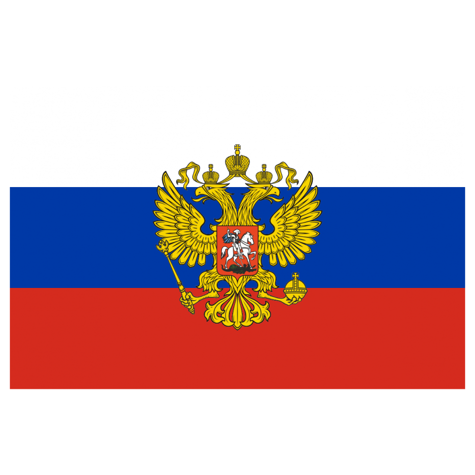
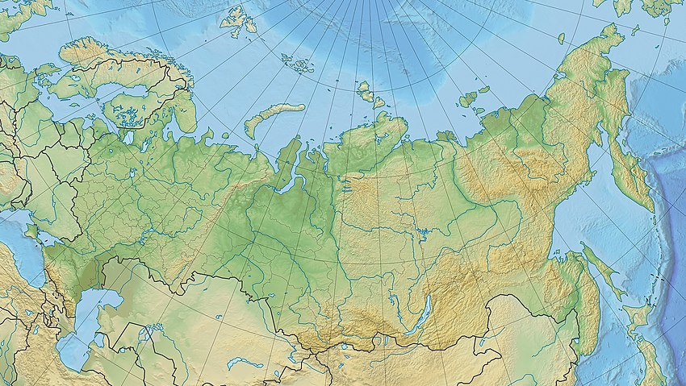
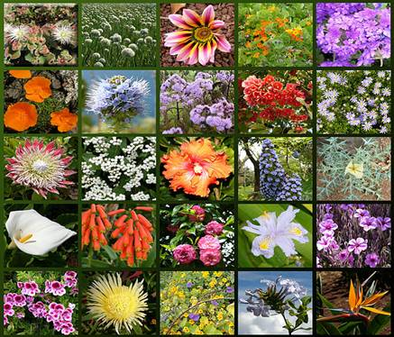
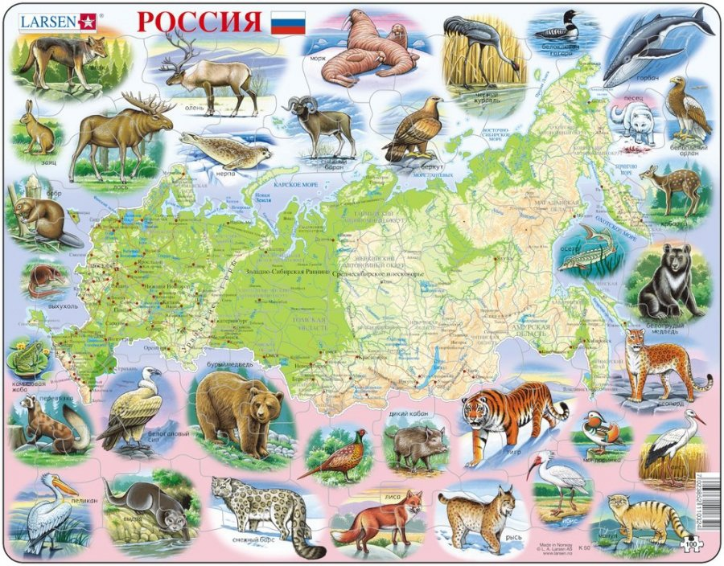

Что такое Россия?
Происхождение названия
Первое письменное упоминание названия «Росия» на греческом языке (греч. Ρωσία) датировано серединой X века и встречается в сочинениях византийского императора Константина Багрянородного «О церемониях» и «Об управлении империей» для обозначения Руси[38]. В кириллической записи слово «Росия» (Рωсїѧ) было впервые употреблено 24 апреля 1387 года[39] в собственноручной приписке митрополита Киприана к переписанной им «Лествице» Иоанна Синайского, где он именует себя «митрополитом Кыевскым и всея Росия»[40]. В XV—XVI веках эллинизированное название «Росия» закрепилось за той частью русских земель, которая была объединена в единое государство под началом Великого княжества Московского: так, Иоанн де Галонифонтибус использует это название в указанном значении в 1404 году[41], а Иван III назван «российским государем» в грамоте крымского хана в 1474 году. В 1547 году, после венчания на царство Ивана IV Васильевича, Московское государство стало также именоваться как Российское царство[43]. Современное написание слова — с двумя буквами «с» — появилось с середины XVII века и окончательно закрепилось при Петре I. По завершении Северной войны, 22 октября (2 ноября) 1721 года Пётр I был провозглашён императором Всероссийским. После этого государство стали официально называть Российской империей[44]. 1 (14) сентября 1917 года, в период между Февральской и Октябрьской революциями, Россия была объявлена республикой, а с 19 июля 1918 года начала официально именоваться Российской Социалистической Федеративной Советской Республикой (РСФСР; в 1936 году слова «Социалистическая» и «Советская» в названии были переставлены местами). С 1922 по 1991 года РСФСР входила в состав СССР, который неформально (особенно за рубежом) часто именовался Россией. В период распада Советского Союза 25 декабря 1991 года РСФСР получила новое название — Российская Федерация[45].
The first written mention of the name "Rus" in Greek (Ρωσία) dates back to the mid-10th century and can be found in the works of the Byzantine Emperor Constantine VII, "De Ceremoniis" and "De Administrando Imperio". In Cyrillic writing, the word "Rusia" (Рωсїѧ) was first used on April 24, 1387, in a handwritten note by Metropolitan Cyprian to his copy of "The Ladder of Divine Ascent" by John Climacus, where he refers to himself as the "Metropolitan of Kiev and all Rus". In the 15th and 16th centuries, the Hellenized name "Rusia" became associated with the part of Russian lands that was united into a single state under the rule of the Grand Duchy of Moscow. For example, Ioann de Galonifontibus used this name in this sense in 1404, and Ivan III was referred to as the "Russian sovereign" in a letter from the Crimean Khan in 1474. In 1547, after Ivan IV Vasilyevich was crowned as Tsar, the Moscow State also became known as the Russian Tsardom. The modern spelling of the word with two "s" appeared in the mid-17th century and was finally established under Peter I. After the end of the Great Northern War, on October 22 (November 2), 1721, Peter I was proclaimed the Emperor of All Russia. After this, the state began to be officially called the Russian Empire.
Географическое положение
Территория России в её заявленных границах составляет 17 125 191[9][b] км² (первое место по площади среди стран мира), что чуть меньше континента Южная Америка. Расположена полностью в Северном полушарии, бо́льшая часть территории России располагается в Восточном полушарии, лишь восточная часть Чукотского автономного округа располагается в Западном полушарии. Омывается водами Тихого и Северного Ледовитого океанов; а также Балтийским, Чёрным, Азовским морями Атлантического океана; обладая самой протяжённой береговой линией в мире (37 653 км). Россия расположена на севере материка Евразия, занимая почти всю Восточную Европу и весь север Азии, полуэксклав Калининградская область по ряду критериев может быть отнесён к Центральной Европе. Уральские и Кавказские горы (либо Кумо-Манычская впадина)[46] разделяют Россию на европейскую (23 %) и азиатскую (77 %) части; при этом отдельно взятые европейская и азиатская части России являются крупнейшими по территории среди других государств Европы и Азии. Крайней северной точкой России является мыс Флигели на острове Рудольфа архипелага Земля Франца-Иосифа (81°51’ с. ш.), который относится к Архангельской области; крайняя северная материковая точка — мыс Челюскина на полуострове Таймыр (77°43’ с. ш.), в Красноярском крае. Крайняя восточная точка — остров Ратманова в Беринговом проливе (169°0’ з. д.), является территорией Чукотского автономного округа; крайняя восточная материковая точка — мыс Дежнёва на Чукотке (169°39’ з. д.). Крайняя южная точка России находится на границе Дагестана с Азербайджаном, к юго-западу от горы Базардюзю (41°11’ с. ш.). Крайняя западная точка лежит в Калининградской области, на Балтийской косе Гданьского залива Балтийского моря (19°38’ в. д.). Протяжённость территории России с запада на восток составляет свыше 10 тысяч километров, с севера на юг — превышает 4 тысячи километров.
Растительность
В составе флоры России насчитывается около 24 700 видов растений, из которых около 11 400 видов — сосудистые, 1137 видов — мохообразные, 9000 видов — водоросли, 3000 видов — лишайники и 159 видов — папоротники. Наиболее богаты видами растений Кавказ (6000 видов) и Дальний Восток (4300 видов)[59], беднее всего — арктические острова Сибири (100—150 видов)[60]. Согласно флористическому районированию, растительность России подразделяется на несколько областей[61]. Циркумбореальная область. Провинции: арктическая, центральноевропейская (Санкт-Петербург, Калининград), эвксинская (Сочи — Туапсе), кавказская, восточноевропейская, североевропейская, западносибирская, алтае-саянская, среднесибирская, забайкальская, северо-восточносибирская, охотско-камчатская. Восточноазиатская область. Провинции: маньчжурская (бассейн Амура и Приморье), сахалино-хоккайдская. Средиземноморская область. Провинция: крымско-новороссийская. Ирано-туранская область. Провинции: туранская (Нижняя Волга, Калмыкия), джунгаро-тяньшаньская (юг Алтая). Лесистость территории России составляет 45,4 %, лесом покрыты 796,2 млн гектаров[62]. Обширность территорий и разнообразие природных зон определяют богатый животный и растительный мир. В арктических пустынях Крайнего Севера произрастают мхи, полярные маки, лютики. В тундре к этим видам добавляются карликовая берёза, ива, ольха. Для тайги типичны ель, пихта, кедр, сосна, лиственница. В подлеске растут черника, багульник, жимолость, шиповник, смородина и др. Южнее начинаются хвойно-широколиственные и широколиственные леса из ели, сосны, дуба, липы, ясеня, вяза, клёна, граба, груши, вишни, с подлеском из лещины, жимолости, бересклета, шиповника, смородины, калины, бузины, спиреи. На юге Дальнего Востока добавляются тис, орех, бархат, дзельква, калопанакс, аралия, шелковица, сирень, маакия, рододендрон, магнолия, гортензия, элеутерококк, вейгела, виноград, лимонник, актинидия, древогубец, пуэрария, схизофрагма и др. В лесостепной и степной части распространены байрачные леса и разнотравье из семейств злаков, бобовых, астровых, гвоздичных, гречишных и т. п. На Кавказе и в Крыму помимо упомянутых европейских пород встречаются тис, можжевельник, бук, каштан, орех, лапина, инжир, хурма, облепиха, фисташка, сумах, шелковица, земляничное дерево, самшит, падуб, витекс, рододендрон, чубушник, миндаль, лавровишня, клекачка, ладанник, виноград, плющ, сассапариль, обвойник, ломонос, хмель.
Животный мир
В составе флоры России насчитывается около 24 700 видов растений, из которых около 11 400 видов — сосудистые, 1137 видов — мохообразные, 9000 видов — водоросли, 3000 видов — лишайники и 159 видов — папоротники. Наиболее богаты видами растений Кавказ (6000 видов) и Дальний Восток (4300 видов)[59], беднее всего — арктические острова Сибири (100—150 видов)[60]. Согласно флористическому районированию, растительность России подразделяется на несколько областей[61]. Циркумбореальная область. Провинции: арктическая, центральноевропейская (Санкт-Петербург, Калининград), эвксинская (Сочи — Туапсе), кавказская, восточноевропейская, североевропейская, западносибирская, алтае-саянская, среднесибирская, забайкальская, северо-восточносибирская, охотско-камчатская. Восточноазиатская область. Провинции: маньчжурская (бассейн Амура и Приморье), сахалино-хоккайдская. Средиземноморская область. Провинция: крымско-новороссийская. Ирано-туранская область. Провинции: туранская (Нижняя Волга, Калмыкия), джунгаро-тяньшаньская (юг Алтая). Лесистость территории России составляет 45,4 %, лесом покрыты 796,2 млн гектаров[62]. Обширность территорий и разнообразие природных зон определяют богатый животный и растительный мир. В арктических пустынях Крайнего Севера произрастают мхи, полярные маки, лютики. В тундре к этим видам добавляются карликовая берёза, ива, ольха. Для тайги типичны ель, пихта, кедр, сосна, лиственница. В подлеске растут черника, багульник, жимолость, шиповник, смородина и др. Южнее начинаются хвойно-широколиственные и широколиственные леса из ели, сосны, дуба, липы, ясеня, вяза, клёна, граба, груши, вишни, с подлеском из лещины, жимолости, бересклета, шиповника, смородины, калины, бузины, спиреи. На юге Дальнего Востока добавляются тис, орех, бархат, дзельква, калопанакс, аралия, шелковица, сирень, маакия, рододендрон, магнолия, гортензия, элеутерококк, вейгела, виноград, лимонник, актинидия, древогубец, пуэрария, схизофрагма и др. В лесостепной и степной части распространены байрачные леса и разнотравье из семейств злаков, бобовых, астровых, гвоздичных, гречишных и т. п. На Кавказе и в Крыму помимо упомянутых европейских пород встречаются тис, можжевельник, бук, каштан, орех, лапина, инжир, хурма, облепиха, фисташка, сумах, шелковица, земляничное дерево, самшит, падуб, витекс, рододендрон, чубушник, миндаль, лавровишня, клекачка, ладанник, виноград, плющ, сассапариль, обвойник, ломонос, хмель. В России расположены 41 национальный парк и 103 заповедника.
